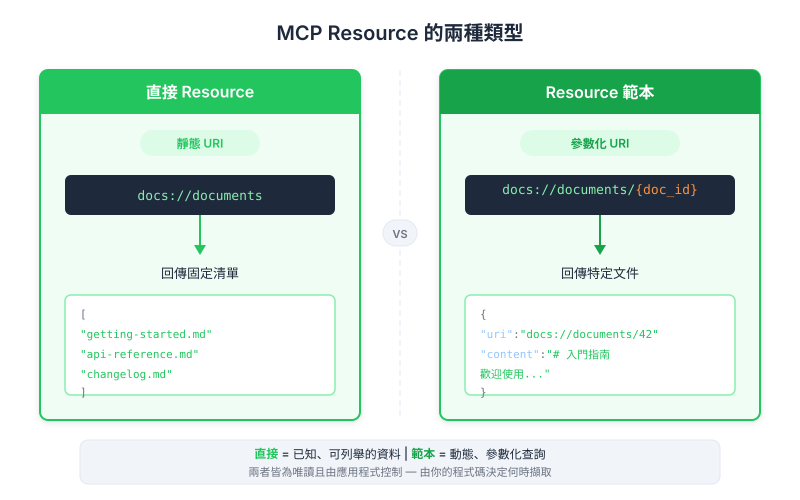

| 项目 | 细节 |
|---|---|
| 考试范畴 | D2 — Tool Design & MCP Integration (18%) |
| Task Statements | 2.3 (MCP server primitives), 2.4 (resource URI design), 2.5 (MIME type handling) |
| 来源 | introduction-to-model-context-protocol / 03-resources-and-prompts / Lesson 10 |
Resources 是 MCP server 中用来通过 URI 对外暴露只读数据的 primitive，类似 HTTP server 中的 GET handler。
在 MCP server 开发中，第一个架构决策就是选择 resource 还是 tool：
| 维度 | Resource | Tool |
|---|---|---|
| 用途 | 暴露数据（只读） | 执行动作（可有副作用） |
| 控制者 | 应用代码（app-controlled） | Claude（model-controlled） |
| 调用方式 | Client 代码调用 read_resource() |
Claude 自主决定调用 |
| HTTP 类比 | GET endpoint | POST/PUT/DELETE endpoint |
| Context 注入 | 内容直接注入 prompt | 结果由 Claude 内部处理 |
当你需要填充 UI（如自动补全列表）或将 context 注入 prompt（如 @ 文档引用）时，resource 是正确选择。
Direct resource 的 URI 是固定的，没有参数。每次返回相同"形状"的数据。
@mcp.resource(
"docs://documents",
mime_type="application/json"
)
def list_docs() -> list[str]:
return list(docs.keys())
URI docs://documents 是静态的，适合用于列出所有可用项目、返回 server metadata 或提供配置值。
Templated resource 在 URI 中使用 {param} 占位符。Python SDK 会自动提取这些值并作为 keyword arguments 传入。
@mcp.resource(
"docs://documents/{doc_id}",
mime_type="text/plain"
)
def fetch_doc(doc_id: str) -> str:
if doc_id not in docs:
raise ValueError(f"Doc with id {doc_id} not found")
return docs[doc_id]
当 client 请求 docs://documents/plan.md 时，SDK 将 plan.md 解析为 doc_id 并传入 fetch_doc(doc_id="plan.md")。
mime_type 参数MIME type 告诉 client 如何解读返回的数据：
| MIME Type | 使用场景 | Client 行为 |
|---|---|---|
application/json |
结构化数据（list、object） | Client 调用 json.loads() |
text/plain |
文档、日志、纯文本 | Client 使用原始字符串 |
application/pdf |
二进制文件 | Client 以 binary 处理 |
SDK 自动处理序列化 — 返回 Python list 或 dict 就会变成有效 JSON，不需要手动 json.dumps()。
Client Code --> MCP Client --> MCP Server --> Resource Function
|
Client Code <-- MCP Client <-- ReadResourceResult <-+
session.read_resource(AnyUrl(uri))ReadResourceRequest 到 serverReadResourceResult（含 MIME type metadata）启动 inspector：
uv run mcp dev mcp_server.py
Inspector UI 显示两个标签页：
- Resources — 列出 direct/static resources（点击即可读取）
- Resource Templates — 列出 templated resources（需提供参数值来测试）
Inspector 显示完整的响应结构，包括 MIME type 和序列化后的内容，是验证 resource 实现的必备工具。
mime_type — client 可能因缺少 MIME type 而错误解析响应json.dumps() 但 SDK 已经处理了，导致双重序列化{} 参数就一定是 direct resourceKey Insight
Resources 是 app-controlled — 你的应用代码决定何时读取它们。这与 tool（Claude 决定何时调用）有根本性差异。理解这个控制边界对 CCA 考试中的 MCP 架构题至关重要。
| 正面 | 背面 |
|---|---|
| MCP 中两种 resource 类型是什么？ | Direct resources（静态 URI、无参数）和 Templated resources（含 {param} 占位符的参数化 URI） |
Resource decorator 中的 mime_type 参数有什么作用？ |
告诉 client 如何解读返回的数据（如 application/json 用于结构化数据） |
| 谁控制 MCP resources 的访问时机？ | 应用代码（app-controlled），不是 Claude 也不是用户 |
| Python SDK 如何处理 templated resource 的参数？ | 自动从 URI 解析 {param} 并将匹配值作为 keyword arguments 传入 function |
| 启动 MCP Inspector 的命令是什么？ | uv run mcp dev mcp_server.py |
| MCP resources 的 HTTP 类比是什么？ | GET request handler — 暴露只读数据，无副作用 |
从 resource 返回 dict 时需要调用 json.dumps() 吗？ |
不需要 — SDK 自动处理序列化 |
用户引用 @document 时，resource 内容最终去哪里？ |
直接注入到发给 Claude 的 prompt 中，不需要 tool call |